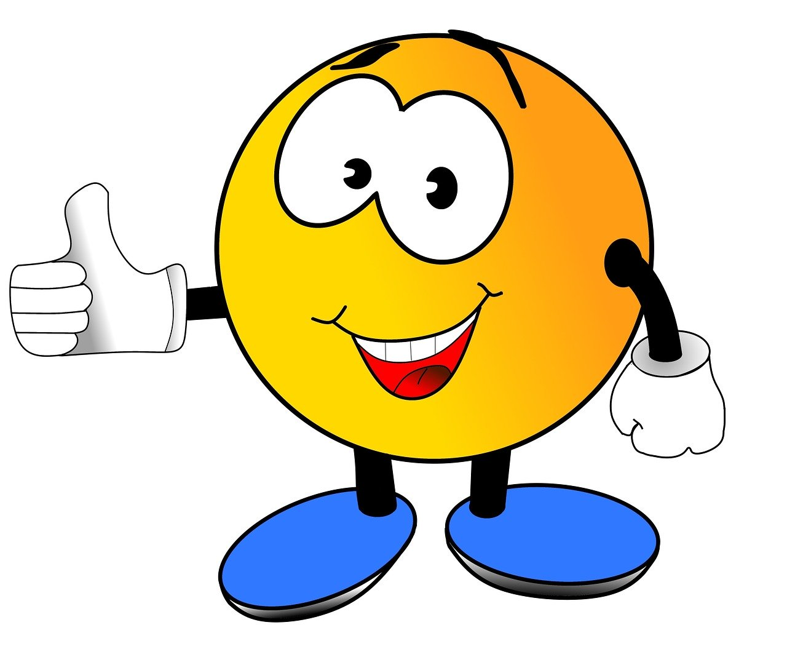
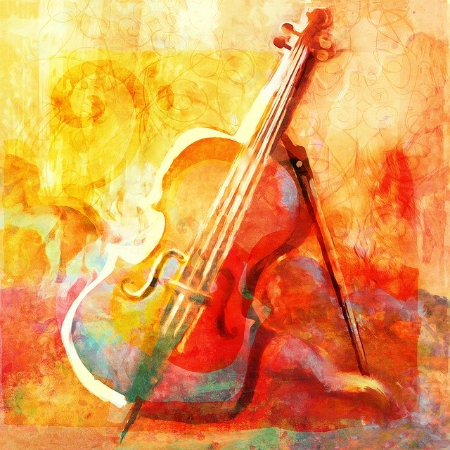

Home
Gets Me Revved Up & Going

A Few Favorite Foods
- Sushi
- Shrimp Tacos
- Saag Paneer w/Basmati Rice
- Cherries
- Czech Beer
Hobbies
- Skiing: Cross Country & Alpine
- Water Activities
- Photography
- Doing Visual Arts: Drawing, Painting, Coloring
- Making Glass Fusion Projects
- Reading
- Languages
- Music Performance/Theory/Composition
Academic Passion: Music Cognition - What is it?
- Science
- - knowledge or system of knowledge covering general truths or operation of general laws
as obtained and tested through the scientific method.
- Music
- - vocal and/or instrumental sounds combined to produce beauty of
form, harmony, and expression of emotion(s).
- Brain
- - The organ in vertebrates which functions as the coordinating
center of sensation, intellectual, and nervous activity.
- Frontier
- - The extreme limit of understanding or achievement in
a subject area.
- Overdue
- - having been deserved and/or needed sth for some time
Two Favorite Crossing-Genres Performing Artists

- Pavel Sporcl (1973- ): Czech Violinist
- The Entire Album: My Violin Legends (2013)
- The Entire Album: Gipsy Way (2014)
Video: Gipsy Fire Concert Live in Prague (2015)
- The Entire Album: Alla Zigarese (2018)
- The Piano Guys: Crossing Multiple Music Genres, often specializing in 'mash ups of 2+ songs into one'
- Cello Wars: Star Wars Parody (2011)
Video: Cello Wars
- The Entire Album: Wonders (2014)
- The Entire Album: Unchartered (2016)